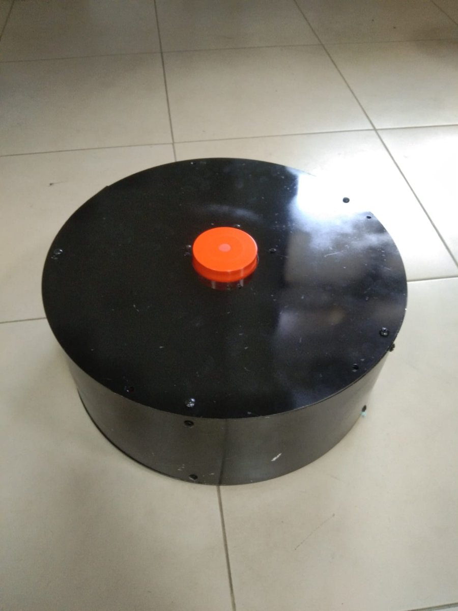
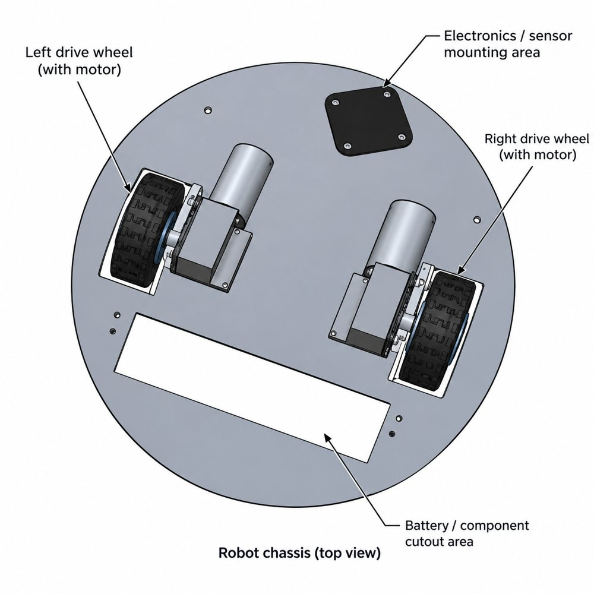
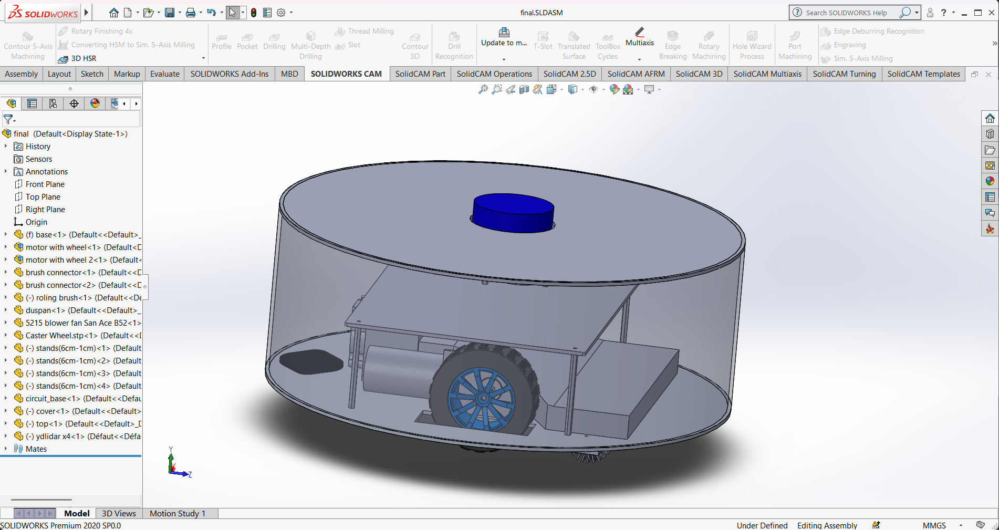
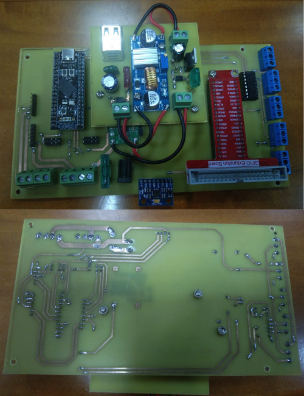
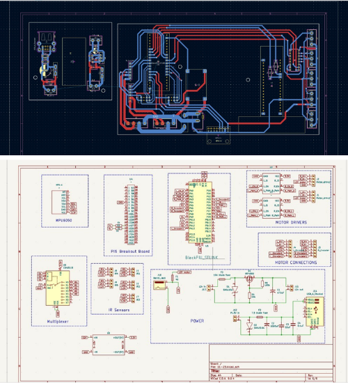

Final-Year University Research · Uva Wellassa University of Sri Lanka · 2026

I designed, built, and validated an indoor autonomous mobile robot for LKR 118,625 using consumer-grade hardware. Many academic robots rely on LiDARs costing LKR 165,000 to 1,320,000. This one uses a repurposed Roborock vacuum LiDAR (about LKR 8,000) and still performs real-time SLAM mapping and autonomous goal navigation.
The robot uses a three-tier design that separates high-level planning, real-time control, and sensor handling.
The Pi and STM32 communicate over a custom UART protocol (115200 bps, framed packets with XOR checksum) at 20 Hz.
The TF tree is map → odom → base_link → laser, with exactly one publisher per link.


When the LiDAR motor started, commutation spikes (up to 50 V) travelled through the shared ground into the Pi, causing undervoltage events and repeated crashes, with about 500 mV of measured ground noise. I designed a custom isolation PCB using a 6N137 optocoupler and an IRLZ44N MOSFET that physically breaks the ground path. Ground noise on the Pi dropped to under 10 mV and the crashes stopped.


During bring-up, both encoders gave intermittent signals and missed about 30% of counts, and rewiring did not fix them. Rather than stall the project, I implemented an open-loop dead-reckoning fallback in the STM32 firmware and measured its accuracy.
| Test | Expected | Measured | Error |
|---|---|---|---|
| Forward (2 s) | +120 mm | +114 mm | −5.0% |
| Forward (3 s) | +180 mm | +180 mm | 0.0% |
| Backward | −120 mm | −121 mm | +0.8% |
| Rotate left / right | ±960 mrad | ±941 mrad | −2.0% |
RViz2 recordings of the LiDAR scan and the occupancy map being built, captured while running the robot.
Open-loop odometry drifts over long runs, and testing covered static, flat, indoor environments only. Planned work: replace the failed encoders, fuse LiDAR + IMU + encoders with an EKF, add dynamic obstacle testing, and extend to multi-room SLAM with loop closure.